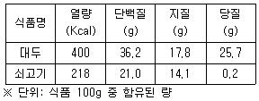
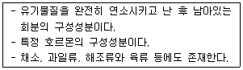
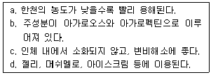
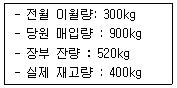
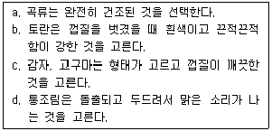
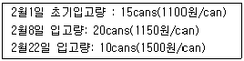
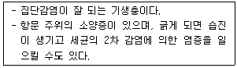

조리산업기사(공통) (2011-03-20 기출문제)
1과목: 식품위생 및 관련법규
1. 복어 중독에 대한 설명 중 틀린 것은?
- 주증상은 신경마비증상이다.
- 복어독의 성분은 테트로도톡신이다.
- 치사율이 높다.
- 열에 불안정하다.
(정답률: 92%)

2. 동물성 식중독의 원인물질에 속하는 것은?
- cicutomin
- muscarine
- saxitomin
- amygdalin
(정답률: 88%)
3. 포유동물이나 조류의 장내에 서식하고 있는 세균이기 때문에 주로 식육이나 달걀이 이 균에 오염되어서 일어날 수 있는 식중독은?
- 살모넬라 식중독
- 포도상구균 식중독
- 장염비브리오 식중독
- 병원성대장균 식중독
(정답률: 91%)
4. 식품위생법상 식품위생의 대상범위는?
- 식품, 식품첨가물, 기구, 용기ㆍ포장
- 식품, 식품첨가물, 조리법, 저장법
- 식품, 식품첨가물, 가공시설, 조리법
- 식품, 식품첨가물, 저장법, 가공방법
(정답률: 96%)
5. 분뇨와 배설물, 분비물, 퇴비, 하수구, 우물 등의 소독에 적당하며, 물을 부으면 부서져 가루 상태의 Ca(OH)2가 되는 것은?
- 오존
- 표백분
- 크레졸
- 생석회
(정답률: 67%)
6. 다음 중 분변오염지표로 볼 수 있는 것은?
- 일반 세균수
- 대장균균수
- 곰팡이수
- 생균수
(정답률: 82%)
7. 100℃ 이상에서 파괴되는 미생물을 멸균할 때 사용하며, 100℃로 하루에 한번 30분씩 연속 3회에 걸쳐 멸균하는 방법은?
- 증기소독법
- 간헐멸균법
- 여과멸균법
- 고압증기 멸균법
(정답률: 77%)
8. 음식류를 조리, 판매하는 영업으로서 음주행위가 허용되지 않는 영업은?
- 단란주점영업
- 유흥주점영업
- 일반음식점영업
- 휴게음식점영업
(정답률: 81%)
9. 다음 중 서로 관련이 있는 것으로 바르게 된 것은?
- DDT-유기인제
- Cd-미나마타 병
- PCB-미강유 중독사건
- Hg-이타이이타이 병
(정답률: 75%)
10. 알코올 발효시에 펙틴이 존재하면 생성되며, 두통, 현기증, 구토, 복통, 설사 이외에 시신경에 염증을 일으켜 실명하게 하는 등의 급성중독 증상을 보이는 것은?
- 붕산
- 메탄올
- 아질산염
- 시안화합물
(정답률: 92%)
11. 식품의 발근, 발아 억제법으로 많이 사용되는 살균법은?
- 방사선 조사법
- 저온 살균법
- 초고온 살균법
- 훈연법
(정답률: 89%)
12. 식중독 식품 중에 증식한 세균이 생산한 독소의 섭취에 의한 것은?
- 웰치 식중독
- 살모넬라 식중독
- 보툴리누스 식중독
- 장염 비브리오 식중독
(정답률: 63%)
13. ppm 단위에 대한 설명으로 옳은 것은?
- 100분의 1을 나타낸다.
- 10,000분의 1을 나타낸다.
- 1,000,000분의 1을 나타낸다.
- 1,000,000,000분의 1을 나타낸다.
(정답률: 82%)
14. 우리나라에 가장 흔하며, 집안의 부엌 주변과 따뜻하고 습기가 많은 곳에서 서식하는 바퀴는?
- 이질바퀴
- 독일바퀴
- 검정바퀴
- 일본바퀴
(정답률: 88%)
15. 조리사가 업무정지 기간 중에 조리사 업무를 한 경우 행정처분기준은?
- 시정명령
- 면허취소
- 업무정지 1월
- 업무정지 1년
(정답률: 92%)
16. 식자재를 보관하는 방법이 적절치 않은 것은?
- 생선: 내장을 제거하고 흐르는 수돗물로 깨끗이 씻어 냉장 보관한다.
- 달걀: 씻지 않은 상태로 냉장 보관한다.
- 젓갈: 서늘하고 그늘진 곳에 뚜껏을 닫아 보관한다.
- 통조림: 개봉 후 남은 내용물은 깡통 채로 보관한다.
(정답률: 96%)
17. 자외선 살균의 단점은?
- 사용법이 어렵다.
- 내성이 생긴다.
- 잔류효과가 없다.
- 피조사물에 변화를 준다.
(정답률: 69%)
18. 차아염소산나트륨을 이용한 소독과 관련된 내용으로 옳지 않은 것은?
- 분자식은 MaCIO이며 수용액 중 CIO-가 생겨서 살균 작용을 나타낸다.
- 원액의 70% 수용액을 주로 사용한다.
- 유기물을 세척하여 제거한 후 사용하여야 더 효과적이다.
- 채소류나 과일류 소독에도 사용할 수 있다.
(정답률: 70%)
19. 단백질의 부패과정에 생성되는 알레르기성 식중독의 원인물질은?
- 암모니아
- 히스티딘
- 히스타민
- 황화수소
(정답률: 62%)
20. 식품위생법상 영업의 행위에 속하지 않는 것은?
- 식품제조
- 수산물 채취
- 식품조리
- 식품가공
(정답률: 92%)
2과목: 식품학
21. 발아 시에 아밀라아제 및 말타아제를 생성하여 전분 당화력이 강하기 때문에 물엿의 제조나 맥주의 양조 등에 이용되는 식품은?
- 토란
- 포도
- 보리
- 감자
(정답률: 92%)
22. 지방 함량이 5% 미만인 저지방 어류로만 짝지어진 것은?
- 은대구, 정어리
- 넙치, 도미
- 고등어, 빙어
- 연어, 조기
(정답률: 74%)
23. C.A.(Controlled Atmosphere)저장법이란 무엇인가?
- 산소와 이산화탄소로 기체 조성을 조절하는 저장법
- 수소와 산소로 기체조성을 조절하는 저장법
- 질소와 수소로 기체조성을 조절하는 저장법
- 헬륨과 이산화탄소로 기체조성을 조절하는 저장법
(정답률: 76%)
24. 과일에 대한 설명으로 틀린 것은?
- 파인애플이나 키위에는 탄수화물 가수분해 효소가 많이 들어있다.
- 레몬은 생선 비린내를 없애주고 단백질을 응고시켜 조직감을 좋게 한다.
- 포도주 등의 과실주를 증류하여 만든 것이 브랜디이다.
- 바나나는 수확 후 호흡률이 급상승하는 climacteric과실이므로 미숙과 일 때 수확, 저장한다.
(정답률: 53%)
25. 우유단백질이 산이나 효소에 의하여 응고되는 성질을 이용하여 제조된 것은?
- 아이스크림
- 버터
- 치즈
- 크림수프
(정답률: 80%)
26. 다음 중 단단한 젤리가 만들어지는 조건이 아닌 것은?
- 펙틴 분자량이 클수록
- 높은 온도에서 끓일수록
- Ca2+을 첨가할수록
- pectin esterase를 작용시킬수록
(정답률: 54%)
27. 펙틴(pectin) 물질의 특성이 아닌 것은?
- 기본단위는 갈락투론산이다.
- 물에서 교질용액을 형성하며 점도가 크다.
- 프로토펙틴, 펙틴, 펙틴산, 펙트산 등이 포함된다.
- 모든 펙틴은 산과 당이 있으면 겔을 형성한다.
(정답률: 71%)
28. 지방산에 대한 내용으로 틀린 것은?
- 자연계에 존재하는 지방산은 말단에 carboxyl기(-COOH)를 한 개 가지고 있다.
- 포화지방산과 불포화지방산으로 나눈다.
- 포화지방산은 탄소수가 증가할수록 물에 녹기 쉽고 융점도 낮아진다.
- 불포화지방산 중에서 동식물성유지에 주로 존재하는 것은 oleic acid이다.
(정답률: 49%)
29. 아질산염 등의 식품첨가물이 첨가된 가공육의 적색성분은?
- 니트로소미오글로빈
- 메트미오글로빈
- 옥시미오글로빈
- 콜레미오글로빈
(정답률: 70%)
30. 다음은 한국인 영양권장량에 제시된 식품성분표이다. 단백질을 대구 50g 대신 쇠고기로 대치하고자 할 때 쇠고기의 양으로 적당한 것은?

- 18.2g
- 42.0g
- 58.0g
- 86.2g
(정답률: 54%)
31. 알긴산(alginic acid)에 대한 설명으로 틀린 것은?
- 아이스크림, 잼 등의 증점제로 사용된다.
- 김, 우뭇가사리 등 홍조류에 주로 함유된 성분이다.
- 주성분 mannuronic acid와 glucuronic acid이다.
- 불용성이지만 Na염으로 변화시키면 가용성으로 변한다.
(정답률: 64%)
32. 다음과 같은 특징을 가지는 영양소는?

- 비타민
- 단백질
- 무기질
- 섬유소
(정답률: 90%)
33. 다음 중 기름의 산패를 촉진하는 경우는?
- 갈색 병에 보관한다.
- 뚜껑을 꼭 막는다.
- 바람이 잘 통하고 밝은 창가에 두고 사용한다.
- 사용한 기름은 새 기름과 섞지 않는다.
(정답률: 83%)
34. 우족을 물과 함께 장시간 가열한 후 냉각시켰더니 응고현상이 나타났다. 어떤 단백질이 유도단백질로 변한 것인가?
- 젤라틴
- 콜라겐
- 알부민
- 카제인
(정답률: 74%)
35. 다음 중 단순지질에 속하지 않는 것은?
- 인지질
- 중성지방
- 왁스
- 콜레스테롤 에스테르
(정답률: 60%)
36. 탄수화물의 체내기능으로 적합하지 않은 것은?
- 면역기능
- 식품에 단맛과 향미 공급
- 단백질 절약작용
- 에너지 공급
(정답률: 60%)
37. 계란찜을 할 때 계란이 응고되는 것을 설명한 내용으로 옳은 것은?
- 물을 첨가하므로 응고가 빨리 된다.
- 설탕을 소량 첨가하면 응고가 더 빨리 된다.
- 소금을 넣으면 응고가 잘된다.
- 후추를 약간 넣으면 응고가 잘된다.
(정답률: 84%)
38. 제빵 시 이스트의 발효에 의해 생성되는 성분으로 빵의 향에 관련이 있는 물질은?
- 알데히드
- 케톤
- 에탄올
- 에스테르
(정답률: 48%)
39. 마이야르(maillard) 반응의 결과가 아닌 것은?
- 향기 생성
- 영양가 저하
- 향산화 작용
- 독소 생성
(정답률: 71%)
40. 결합수의 특성이 아닌 것은?
- 낮은 온도(-30~-20℃)에서도 잘 얼지 않는다.
- 100℃이상으로 가열하거나 압력을 가해도 제거하지 어렵다.
- 용매로서 쉽게 이용된다.
- 미생물의 번식과 발아에 이용되지 못한다.
(정답률: 89%)
3과목: 조리이론 및 급식관리
41. 한천에 대한 올바른 설명을 모두 나열한 것은?

- a, b, c
- b, c
- a, c
- b, c, d
(정답률: 43%)
42. 소의 부위별 조리법으로 맞지 않는 것은?
- 홍두깨살 : 장조림
- 사태육 : 구이
- 양지육 : 탕
- 갈비 : 찜
(정답률: 82%)
43. 원가의 종류에 따른 계산방법이 틀린 것은?
- 직접원가 = 직접재료비 + 직접 노무비 + 직접경비
- 제조원가 = 직접재료비 + 직접 노무비 + 제조간접비
- 총원가 = 제조원가 + 판매관리비
- 판매가격 = 직접원가 + 제조간접비 + 판매관리비 + 이익
(정답률: 61%)
44. 전분을 160℃이상으로 가열하면 호정화가 일어난다. 이때 최종적으로 생성되는 물질은?
- 단당류
- 이당류
- 배당체
- 덱스트린
(정답률: 74%)
45. 어패류의 조리원리로 옳은 것은?
- 생선을 조리면 질감이 연하게 느껴지는 것은 젤라틴이 물을 흡수하여 콜라겐이 되기 때문이다.
- 생선구이 시 생선에 뿌리는 소금의 적당한 양은 재료 무게의 10% 정도가 좋다.
- 생선이 석쇠에 붙는 것을 방지하기 위해 석쇠에 기름을 발라 뜨겁게 한 후 생선을 올린다.
- 어패류는 결합조직이 많아 부스러지기 쉬우므로 자주 뒤집지 않도록 한다.
(정답률: 71%)
46. 우리나라의 5첩반상에 포함되지 않는 것은?
- 생채
- 구이
- 젓갈
- 회
(정답률: 87%)
47. 식품재료에 직접 불이 닿게 하여 조리하는 조리 기구는?
- 브로일러(broiler)
- 오븐(oven)
- 그리들(griddle)
- 레인지(range)
(정답률: 72%)
48. 부식을 결정할 때 가장 먼저 결정해야 하는 영양소는?
- 지방
- 무기질
- 단백질
- 탄수화물
(정답률: 45%)
49. 다음 자료를 가지고 재고 조사법에 의하여 재료의 소비량을 산출하면 얼마인가?

- 800kg
- 450kg
- 900kg
- 320kg
(정답률: 60%)
50. 지방의 체내에서의 기능이 아닌 것은?
- 세포막 구성성분
- 세포벽의 구성성분
- 체온조절 및 장기보호
- 포만감 제공
(정답률: 34%)
51. 식재료를 씻는 방법으로 옳은 것은?
- 채소류는 고인 물에 한번만 씻어 영양소 유출을 막는다.
- 달걀은 씻지 않거나 조리 직전에 씻는다.
- 생선류는 목적에 맞도록 자른 후 깨끗이 씻는다.
- 뿌리가 붙어 있는 채소류의 경우에는 뿌리가 붙어있는 채로 씻는다.
(정답률: 59%)
52. 푸른색 채소 조리 시 식초를 넣었을 때 누런색으로 변하는 이유는?
- 엽록소가 산에 의해 pheophytin이 되므로
- 엽록소가 산에 의해 chlorophylline이 되므로
- 엽록소가 분해되어 chlorophyllide가 되므로
- 엽록소가 chlorophyllase에 의해 pheophorbide를 형성하므로
(정답률: 52%)
53. 두류를 연하게 하는 조리방법이 아닌 것은?
- 1%이 식염수에 담갔다가 그 물로 조리한다.
- 콩 중량의 0.3%의 증조수에서 가열한다.
- 경수를 사용하여 조리한다.
- 물에 담가 충분히 물이 흡수된 다음 조리한다.
(정답률: 66%)
54. 과일잼을 만들 때 가장 적당한 조건은?
- 펙틴 함량 1%, pH 2.5, 설탕량 50%
- 펙틴 함량 1%, pH 3.0, 설탕량 70%
- 펙틴 함량 1%, pH 3.0, 설탕량 60%
- 펙틴 함량 1%, pH 4.0, 설탕량 77%
(정답률: 75%)
55. 생선을 통으로 구입하여 횟감으로 썰엇더니 무게가 3.3kg이 나왔따면 이 생선의 원래의 무게는? (단, 이 생선의 폐기물은 70%이다.)
- 13.3kg
- 11.0kg
- 23.1kg
- 15.3kg
(정답률: 67%)
56. 식품의 감별법이 올바른 것끼리 모두 나열한 것은?

- a, b, c
- b, c, d
- a, c, d
- a, b, d
(정답률: 83%)
57. 열전도율이 가장 큰 냄비는?
- 알루미늄 냄비
- 철 냄비
- 유리 냄비
- 구리 냄비
(정답률: 73%)
58. 계란을 오래 가열하면 난황주위에 청변현상이 생긴다. 이때 형성된 물질은?
- 레시틴
- 황화수소
- 황화제일철
- 탄산수소나트륨
(정답률: 60%)
59. 빈혈증 환자에게 필요한 철분을 섭취하기 위해 권해야 할 식품끼리 묶인 것은?
- 오이, 가지
- 쇠간, 시금치
- 생굴, 감자
- 쌀, 사과
(정답률: 88%)
60. 다음은 어떤 식당의 2월 한 달간 통조림 구입 내역이다.

2월말에 실사재고를 한 결과 15개의 재고가 남았을 때 선입선출법에 의한 재고금액은?- 16750원
- 20750원
- 16500원
- 22500원
(정답률: 48%)
4과목: 공중보건학
61. 다수인이 밀집한 밀폐된 실내에서 올 수 있는 대표적인 현상은?
- 산소중독증
- 질소중독증
- 군집독
- 저산소증
(정답률: 86%)
62. 정기예방접종 대상 질환에 속하지 않는 것은?
- 유행성이하선염
- 페스트
- 풍진
- 폴리오
(정답률: 47%)
63. 고체상 입자로서 크기가 가장 큰 것은?
- 연무(mist)
- 훈연(fume)
- 분진(dust)
- 매연(smoke)
(정답률: 74%)
64. 다음 중 질병발생이 수년을 주기로 유행하는 현상은?
- 추세변화
- 순환변화
- 불규칙변화
- 계절적변화
(정답률: 47%)
65. Vitamin D 합성과 관계있는 것은?
- 적외선
- γ선
- 자외선
- 우주선
(정답률: 78%)
66. 다음 중 파리가 매개하는 감염병이 아닌 것은?
- 장티푸스
- 세균성 이질
- 콜레라
- 톡소플라즈마
(정답률: 74%)
67. 직업병과 관련 있는 근로자와의 연결이 틀린 것은?
- 전신진동장애 – 발전기 조작원
- 소음성난청 – 발파작업자
- 백혈병 – 방사선취급자
- 저압장애 – 잠수부
(정답률: 79%)
68. 다음에서 설명하는 기생충은?

- 회충
- 편충
- 구충
- 요충
(정답률: 72%)
69. 용존산소(DO)와 생물화학적 산소요구량(BOD)의 관계는?
- DO가 높으면 BOD는 낮다.
- DO가 낮으면 BOD도 낮다.
- DO가 높으면 BOD도 높다.
- DO와 BOD는 관계없다.
(정답률: 67%)
70. 납(연)중독과 관련된 직업으로 맞는 것은?
- 페인트공, 인쇄공
- X선기사, 도자기공
- 광부, 판금공
- 도금작업부, 도로보수공
(정답률: 41%)
71. 구충ㆍ구서의 일반적 구제원칙과 거리가 먼 것은?
- 발생원 및 서식처 제거
- 발생초기 유충을 구제
- 동물의 생태, 습성에 따른 구제
- 성충을 주로 구제
(정답률: 75%)
72. 투베르쿨린(tuberculin) 반응검사의 목적은?
- 결핵예방
- 결핵치료
- 결핵감염 여부 판단
- 결핵의 정도 파악
(정답률: 64%)
73. 대기오염이 가장 잘 발생할 수 있는 기상 조건은?
- 고온, 고습
- 기온역전
- 저기압
- 저온, 건조
(정답률: 63%)
74. 감염된 들쥐의 배설물로 배출된 나선균 병원체에 의해 경피감염이 흔히 이루어지는 질병은?
- 황열
- 렙토스피라증
- 탄저
- 홍역
(정답률: 67%)
75. 부적당한 조명에 의해서 일어나는 장애와 거리가 먼 것은?
- 안구진탕증
- 백내장
- 근시
- 녹내장
(정답률: 49%)
76. 일몰 후 지열복사로 지표면의 공기층이 먼저 냉각되어 형성되는 기온역전은?
- 침강성 역전
- 방사성 역전
- 전선성 역전
- 확산성 역전
(정답률: 50%)
77. 불쾌지수 산출에 이용되는 요소는?
- 기온, 기압
- 기온, 기습
- 기류, 기압
- 기류, 기습
(정답률: 85%)
78. 건조 상태에서 정상공기의 화학적 조성이 틀린 것은?
- O2-약 21%
- CO2-약 0.3%
- Ar-약0.93%
- N2-약 78%
(정답률: 83%)
79. 감염병의 예방을 위하여 생균백신을 이용하는 질병들로 바르게 짝지어진 것은?
- 장티푸스, 디프테리아
- 백일해, 폴리오
- 파상풍, 세균성이질
- 홍역, 결핵
(정답률: 36%)
80. 비말감염을 통하여 일어나는 감염병들로 바르게 짝지어진 것은?
- 디프테리아, 백일해
- 장티푸스, 홍역
- 세균성이질, 백일해
- 파라티푸스, 유행성간염
(정답률: 52%)